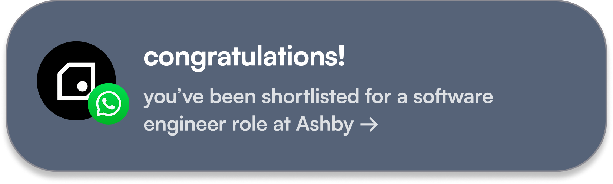

never get ghosted
no CVs. no cover letters. no repeating yourself 140 times. apply from your phone. a guaranteed answer in 7 days.*
get seen





.webp)

verify once. apply anywhere.
pick the track you're going for. software, marketing, design, hardware. the work you actually want to do. a 60 second video pitch. a 3 minute walkthrough of the best thing you've made, with the real files behind it. set aside 2 hours and do it properly. that's it. you're verified.
we verify your work matches your claims. a human reviews it properly, checks the details, and makes sure it backs up what you’ve said. nothing gets auto rejected by a bot.
apply to any role on the platform. want stronger matches on another track? earn its stamp. every stamp sharpens your matches. none of them gate you.


the tracker's 6,000+ external jobs? open to everyone, stamp or not, live today. you apply to those direct, so the 7 day answer covers platform roles.


why we're doing this.
it's never been harder to be young and looking for work in the UK. over 1 million young people are out of work or education. entry level roles have dropped by nearly a third since ChatGPT launched. 70 people now fight for every graduate job. and more than half of candidates get ghosted.
but while the old path narrows, a new one is growing. the UK is starting record numbers of startups, and that's where the roles are being created. real responsibility early, real skills, real rooms.
we think what you can do should matter more than where you went or who you know.
that's why we're here: to help 1 million young people into meaningful opportunities by 2030.

every offer made through the platform works towards that goal. so does every room uncooked labs opens.
the full story, from our founder →early users, in their words
didn't get the role. but I heard back in 5 days with an actual reason. first time that's ever happened. I'll be using it again.
got the role. verified once, applied from my phone, had a call booked within the week.
took me under an hour to get verified. no CV, no cover letter, no rewriting my story 10 times.
FAQs
what does the 7 day answer actually mean?
apply to any role on the platform and the startup replies within 7 days. a real human, a real decision, and a reason if it's a no. that's the rule every startup signs up to. the tracker's 6,000+ external jobs work differently: you apply to those direct on the company's own site, so the 7 days doesn't cover them.
who else is using it?
students and grads from across the UK. Oxford, Cambridge, Imperial, UCL, KCL, Manchester, Edinburgh, and dozens more. it's not an elite club. if you can build something and show it, you're in.
is it free?
yes. free for candidates, always. startups pay to hire. you never pay to apply.
do I need a CV or experience?
no CV. your passport replaces it: a 60 second video pitch and a walkthrough of the best thing you've made. a uni project, a side project, a hackathon build. if you made it and can explain it, it counts.
what kind of roles and startups?
early stage, VC backed startups hiring across software, marketing, design and hardware. the kind of role where you get real responsibility in year 1, not year 5.
how long does verification take?
set aside 2 hours and do it properly. after that you never repeat it. one passport, every application.
what if I don't get matched straight away?
roles come to you as they open, and we ping your phone when one fits. in the meantime the tracker is live with 6,000+ roles you can apply to today.
what happens to my video and my work?
founders see it when you apply to their role. nobody else. we never sell it, share it, or train anything on it. delete it whenever you want.